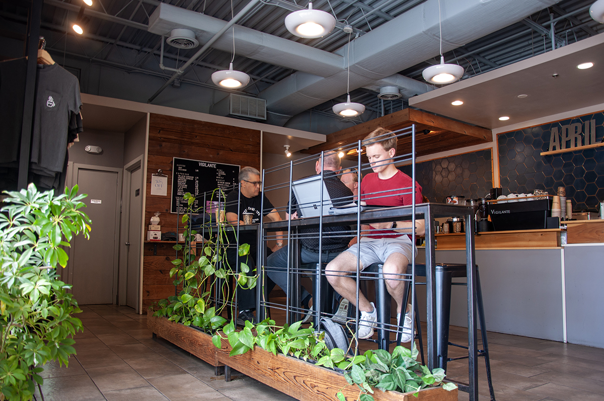

For avid coffee drinkers, two questions come to mind in the morning:
- First: Should I drink coffee this morning? (Hint: the answer is usually yes)
- Second: Where should I get coffee? This is where conflict arises.
University of Maryland’s campus is home to many coffee shops, both well-known chains and local cafes. Each location offers different benefits to students and local residents, serving a wide variety of caffeinated (and not) drinks.
Starbucks
Starbucks has a storefront in College Park Shopping Center, as well as being sold at most cafes on campus, like ESJ’s Food for Thought and McKeldin Library’s Footnotes Cafe. A latte costs, on average, $5. However, Dining Dollars provide discounts to students by bypassing sales tax on purchases. Most cafes on campus accept Dining Dollars.
Dunkin'
Formerly known as Dunkin' Donuts, this nationwide chain offers coffee drinks at a cheaper price than Starbucks, averaging just under $4. Dunkin' has two locations near UMD’s campus, both located underneath popular off-campus apartment complexes.

Bagels ‘n Grinds
A College Park favorite, Bagels ‘n Grinds is the go-to bagel shop, perfect for early morning breakfasts and lazy weekend brunches. The shop includes a beverage station with “six brews of fresh hot coffee, iced coffee and fresh brewed iced tea,” according to their website.
Vigilante Coffee
Vigilante’s coffee beans are roasted just down the road at their Hyattsville location. Their lattes are on the more expensive end of the price scale, with prices averaging around $5.50. Rather than a large chain, Vigilante is more of a small town, local coffee shop.

A survey about coffee preferences and opinions was conducted throughout the spring semester with 89 respondents, all of which are either students or professors at UMD, and showed the following results:
Of all the coffee shops on/around campus, over 40% of respondents believe that Dunkin' has the fastest turnaround time, from placing an order to receiving a drink. However, under 20% of respondents think that Dunkin' has the best tasting coffee – Dunkin’s greatest benefit is its efficiency and low cost.
On the other hand, the majority of students think that Starbucks or Vigilante coffees have the best flavor. This begs the question: Are price and quality correlated?
When asked what coffee shop College Park locals would recommend to visitors, there was a consistent consensus: Vigilante Coffee.
Among the students who responded to the survey was sophomore biology major Laura DiPalma, who said that Vigilante is her favorite coffee around campus.
“Every time I get a coffee from Vigilante, it never fails to brighten my day,” DiPalma said. “Some places, like Dunkin', have on and off days, but Vigilante is always good.”
Another highlight of College Park coffee is Bagels ‘n Grinds’ self-serve coffee bar, which offers a variety of freshly brewed coffees, both hot and cold.
“I always get the Kona Nut Macadamia coffee,” said sophomore public health major Spencer Sherwood. “My friends always make fun of me for drinking my coffee black, but I love it. The flavors in Bagels ‘n Grinds’ coffee are so unique and yummy.”
Despite the array of coffee options and shops around campus, the cheapest option for caffeine intake is to make your own coffee at home.
With ground coffee, one cup costs around 26 cents, according to Greenlight, a platform that teaches budgeting and financial responsibility.
However, only 54% of survey respondents think that home-brewed coffee is the cheapest option. Buying coffee every day has become a habit for many Americans, according to Forbes. Additionally, many students appreciate the convenience of buying coffee each day, rather than the more economical option.
In summary:
- The University of Maryland offers a plethora of options for students to consume coffee throughout their day, with coffee shops in many locations around and near the edge of campus.
- Each coffee shop offers different options, including price, flavor, and quality.
- Dunkin’ might be the cheapest option in terms of purchasing one coffee each day, but in order to save the most money, you should choose to make coffee at home.